EcoLact / Flujos de negocio
Flujo de caja y finanzas
Cada movimiento tiene una operación de origen
Caja reúne las entradas y salidas registradas por las operaciones del negocio. El administrador consulta el saldo y puede seguir cada movimiento hasta la venta, compra o pago que lo originó.
Administrador
Consulta saldo, historial y detalle de los movimientos.
Ventas
Origina entradas al registrar ventas al contado.
Planta y pagos
Originan salidas por compras y pagos registrados.
Así funciona el proceso

Ampliar diagrama · Descargar fuente Mermaid

Ver la fuente editable del diagrama
flowchart TB
A([Inicio · Confirmar operación]) --> B{¿Qué operación mueve dinero?}
B --> C[Venta al contado]
B --> D[Compra de insumos con total positivo]
B --> E[Pago al proveedor]
B --> F[Pago al trabajador]
C -->|ENTRADA · VENTA| G[Caja EcoLact]
D -->|SALIDA · INSUMOS| G
E -->|SALIDA · PROVEEDOR| G
F -->|SALIDA · TRABAJADOR| G
G --> H[Concepto, fecha, importe y referencia]
H --> I[Administrador · Historial y detalle]
I --> J[Saldo: entradas menos salidas]
J --> Z([Fin · Seguimiento financiero])
X[Venta de planilla] -. Sin entrada inmediata .-> Y[Descuento del pago semanal]
W[Compra sin total conocido] -. Sin salida inventada .-> V[Solo inventario]
classDef default fill:#eaf3ff,stroke:#7ca5df,color:#123d91,rx:7,ry:7;
classDef decision fill:#fff3df,stroke:#dca34d,color:#754c0c;
classDef terminal fill:#e6f7ed,stroke:#72b692,color:#145d3b;
class B decision;
class A,Z terminal;
Paso a paso
- Confirmar la operación que mueve dinero: una venta al contado, una compra con total positivo o un pago realizado.
- Registrar el movimiento de caja dentro de la misma transacción. Si falla el registro de caja, la operación tampoco queda confirmada.
- Guardar categoría, concepto, descripción, importe, fecha, referencia de origen y usuario que registró la operación.
- Consultar el historial y abrir el detalle para reconocer comprador, proveedor o trabajador y su operación asociada.
- Seguir el saldo acumulado y los indicadores de ingresos, salidas y número de movimientos de hoy.
Entradas
VENTA: importe de las ventas registradas al contado.
Salidas de compras
INSUMOS: compra con total conocido mayor que cero.
Salidas de pagos
PROVEEDOR y TRABAJADOR: importe neto del pago realizado.
Cómo leer un movimiento
| Dato | Para qué sirve |
|---|---|
| Origen y categoría | Distinguir una venta, compra o pago |
| Concepto y descripción | Saber qué se registró y a quién corresponde |
| Importe y dirección | Reconocer cuánto entró o salió |
| Fecha | Ubicar cuándo se registró el movimiento |
| Referencia y detalle | Relacionar el movimiento con la operación concreta |
| Usuario de registro | Identificar quién confirmó la operación |
Las ventas conservan la fecha de su operación. Las compras usan la hora de registro en caja y conservan la fecha de compra en el detalle. Los pagos usan el momento efectivo de registro (pagadoAt) cuando está disponible.
Saldo = suma de entradas − suma de salidas. Es el saldo de los movimientos registrados. Una compra sin total no genera salida y, por tanto, su desembolso desconocido no aparece en ese saldo.
Evitar duplicar el dinero
Los movimientos se guardan una sola vez por tipo e identificador de referencia. Una venta a cuenta del pago no entra a caja: reduce el neto que luego sale al pagar al proveedor. Tampoco se registra dinero al guardar un borrador OCR, planificar producción o calcular un pendiente.
Las rutas de Caja revisadas ofrecen consulta y panel de detalle al administrador. No se documenta un formulario de movimientos manuales: no aparece en ese flujo implementado.
Resultado del proceso
Historial financiero relacionado con operaciones reales. El administrador puede explicar cada entrada, cada salida y el saldo registrado.
Trazabilidad con el código revisado
Revisión documental: 28 de octubre de 2026. Las rutas siguientes identifican las fuentes locales; no implican haber ejecutado el sistema de negocio.
EcoLactWeb/app/Application/Caja/RegistrarMovimientoCaja.phpEcoLactWeb/app/Application/Caja/CajaResumen.phpEcoLactWeb/app/Application/Caja/Contracts/CajaQuery.phpEcoLactWeb/app/Application/Pago/RegistrarPagoObligacion.phpEcoLactWeb/routes/web.phpyEcoLactWeb/routes/api.php